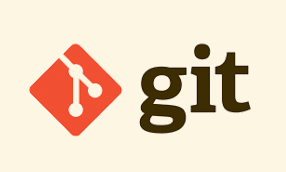
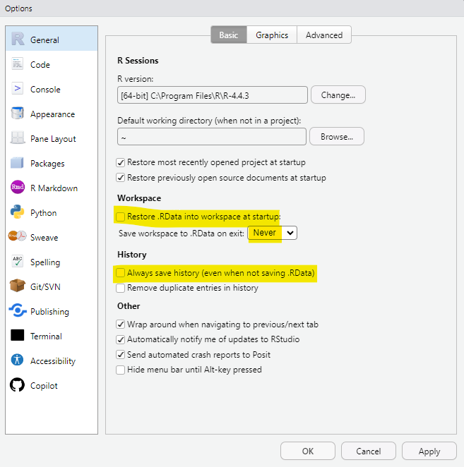
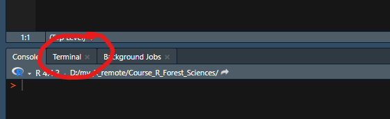
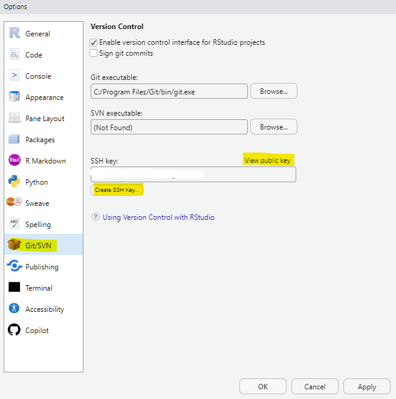
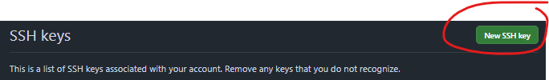

[1] "R version 4.6.1 (2026-06-24 ucrt)"Set up the working environment
Géraldine Derroire
Cirad - UnB
2026-07-17
We are going to install the following:
- R
- RStudio desktop
- git
- quarto
⚠️ In the following slides, click on the text in blue to follow the links.
This takes a bit of time, but you will just need to do it once 😉!
Install R

Accept all the default settings.
For those who already have R installed, please make sure that the version you are using is at least 4.4.0. For this, run the following code:
Install RStudio

Don’t reinstall R.
Installing git

Accept the default options during installation.
Install Quarto
Check that the installation went well
Restart your machine.
Open RStudio and run the code on the following slides in the console.
Check R version
Check if git is installed
The path won’t be the same for you than here, but this is ok.
Check if quarto is installed
The path won’t be the same for you than here, but this is ok.
Configuration
Configure RStudio
I recommend not saving the workspace and the command history automatically. It is better to decide what you want to save.
For this, go to Tools > Global Options > General and select the options as shown here:

Configure git
Before using git, you need to declare your name and email locally.
For this, open the RStudio terminal:

⚠️ If you cannot see the terminal go on the menu Tools/Terminal/New Terminal
and run:
Configure git
Change the default branch name, by running the following in the RStudio terminal:
Check git configuration
In the RStudio terminal, run the following:
Create a GitHub account
Create an account on GitHub here
GitHub may ask you to enable two-factor authentication (2FA) during account creation. This is a security feature. Follow the instructions provided by GitHub. Keep your recovery codes in a safe place.
Create a GitHub SSH key
To communicate with GitHub, you need a SSH key :
- Open RStudio and click on Tools > Global options > Git/SVN
- Click on Create SSH Key
- Choose ED25519 if available and click on Create
- Click on View public key and copy it

Create a GitHub SSH key
- Go to the key setting page in GitHub
- Click on New SSH key
- Choose a name (e.g. My laptop) and paste your key
- Click on Add SSH key

Create a GitHub SSH key
Check if your key is working by typing the following in the RStudio terminal:
You should get a message telling you that you successfully authenticated, but GitHub does not provide shell access. 👍
When you first connect to GitHub, you will be asked if you want to continue connecting, answer yes.
Install the needed R packages
Run the code on the following slides in the console:
Install the needed R packages
Install TinyTex by running the following R commands:
and checking that it is installed:
Download the datasets that we will use:
Store these datasets in an accessible folder on your computer.
You are all set!
Parabens! 👏🥳💪
And if you have any problem 😢, please contact me.
Acknowledgments
The content of this document is largely inspired by the FRB-Cesab guide written by Nicolas Casajus.